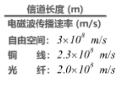

计算机网络
B站计算机网络微课堂（湖科大教书匠）笔记
1.概述
1.1因特网概述
网络、互联网和因特网
网络（Network）由若干结点（Node）和连接这些结点的链路（Link）组成。
多个网络还可以通过路由器互连起来，这样就构成了一个覆盖范围更大的网络，即互联网。因此，互联网是“网络的网络”
因特网（Internet）是世界上最大的互连网络

因特网发展的三个阶段
第一阶段（1969）：从单个网络ARPANET向互联网发展
第二阶段（1985）：逐步建成三级结构的因特网
第三阶段（1993）：逐步形成了多层次ISP结构的因特网

ISP（Internet Service Provider）：因特网服务提供者

因特网的标准化工作
1.因特网在制定其标准上的一个很大的特点是面向公众
2.制订因特网的正式标准要经过以下四个阶段：
- 因特网草案
- 建议标准（从该阶段开始就成为RFC文档）
- 草案标准
- 因特网标准
因特网的组成
因特网由边缘部分和核心部分组成

1.2三种交换方式
电路交换
电路交换（Circuit Switching）
电话交换机接通电话线的方式称为电路交换

从通信资源的分配角度来看，交换就是按照某种方式动态地分配传输线路的资源
电路交换的三个步骤：
- 建立连接（分配通信资源）
- 通话（一直占用通信资源）
- 释放连接（归还通信资源）
分组交换
分组交换（Packet Switching）

三种方式对比


1.3计算机网络的定义和分类
1.计算机网络的精确定义并未统一
2.一个最简单的定义：一些相互连接的、自治的计算机的集合
互连：计算机之间可以通过有线或无线的方式进行数据通信
自治：独立的计算机，它有自己的硬件和软件，可以单独运行使用
3.较好的定义：计算机网络主要是由一些通用的、可编程的硬件互连而成的，而这些硬件并非专门用来实现某一特定目的。这些可编程的硬件能够用来传送多种不同类型的数据，并能支持广泛的和日益增长的应用
4.计算机网络的分类：

1.4计算机网络的性能指标
性能指标可以从不同的方面来度量计算机网络的性能
常见的性能指标：
- 速率
- 带宽
- 吞吐量
- 时延
- 时延带宽积
- 往返时间
- 利用率
- 丢包率
速率
速率与比特之间的比较：

带宽

一条通信线路的“频带宽度”越宽，其所传输数据的“最高数据率”也越高
吞吐量

时延
网络时延主要包括：
- 发送时延
- 传播时延
- 处理时延

三种时延的计算：

不同介质中电磁波的传播速率：
发送速率与网卡的发送速率、信道带宽和接口速率都有关：

时延带宽积
时延带宽积 = 传播时延 $\times$ 带宽
在发送时延的过程中，通道上也在传送着数据

往返时间

利用率
利用率分为：信道利用率 和 网络利用率

网络时延与利用率之间的关系（U为利用率，D为时延）

丢包率
丢包率即分组丢包率，是指在一定的时间范围内，传输过程中丢失的分组数量与总分组数量的比率
丢包率具体可分为：
- 接口丢包率
- 结点丢包率
- 链路丢包率
- 路径丢包率
- 网络丢包率
分组丢失的两种情况：

1.5计算机网络体系结构
三种体系结构

各层次涉及的协议

各层级解决的问题
物理层：
- 采用怎样的传输媒体（介质）
- 使用怎样的信号表示比特0和1
- 采用怎样的物理接口
数据链路层：
- 如何表示网络中的各主机（主机编址问题，例如MAC地址）
- 如何从信号所表示的一连串比特流中区分出地址和数据
- 如何协调各主机争用总线
网络层：
- 如何识别各网络以及网络中的各主机（网络和主机共同编址问题，例如IP地址）
- 路由器如何转发分组，如何进行路由选择
运输层：
- 如何解决进程之间基于网路的通信问题
- 出现传输错误时，应该如何处理
应用层：通过应用进程之间的交互来完成特定的网络应用
- 支持万维网应用的HTTP协议
- 支持电子邮件的SMTP协议
- 支持文件传送的FTP协议

分层思想举例
利用互联网实现应用进程间的通信


专用术语
实体：任何可发送或接收信息的硬件或软件进程对等实体：收发双方相同层次中的实体

协议：控制两个对等实体进行逻辑通信的规则的集合
协议三要素：
- 语法：定义所交换信息的格式
- 语义：定义收发双方所要完成的操作
- 同步：定义收发双方的时序关系

服务：在协议的控制下，两个对等实体之间的逻辑通信使得本层能够向上一层提供服务。要实现本层协议，还需要使用下面一层所提供的服务

协议是水平的，服务是垂直的
实体看得见相邻下层所提供的服务，但是并不直到实现该服务的具体协议。即，下面的协议对上面的实体是透明的。
服务访问点：在同一系统中相邻两层的实体交换信息的逻辑接口，用于区分不同的服务类型。

服务原语：上层使用下层所提供的服务必须通过与下层交换一些命令，这些命令称为服务原语
协议数据单元PDU：对等层次之间传送的数据包称为该层的协议数据单元
服务数据单元SDU：同一系统内，层与层之间交换的数据包称为服务数据单元
多个SDU可以合成为一个PDU，一个SDU也可划分为几个PDU

2.物理层
2.1基本概念
1.物理层考虑的是：怎样才能在连接各种计算机的传输媒体上传输数据比特流
2.物理层为数据链路层屏蔽了各种传输媒体的差异，石数据链路层只需要考虑如何完成本层的协议和服务，而不必考虑网络具体的传输媒体是什么。
3.物理层需要考虑的问题：
- 机械特性
- 电气特性
- 功能特性
- 过程特性

2.2传输媒体
物理层下面的传输媒体主要有两类：
- 导引型传输媒体
- 非导引型传输媒体
导引型传输媒体
同轴电缆

双绞线
绞合的作用：
- 抵御部分来自外界的电磁波干扰
- 减少相邻导线的电磁干扰

光栅

光栅可分为：多模光栅 和 单模光栅
多模光栅：光在纤芯中传输的方式是 不断地全反射